Engine Removing
Engine Removing
Special tools, testers and auxiliary items required
• Adapter (V.A.G 1318/20)
• Adapter (V.A.G 1318/20-1)
• Container for removed components (V.A.G 1698)
• Left subframe mounting (VAS 6131/6-1)
• Right subframe mounting (VAS 6131/6-2)
• Left suspension support (VAS 6131/6-3)
• Right suspension support (VAS 6131/6-4)
• Supports (VAS 6131/6-5) (Qty. 2)
• Supports (VAS 6131/6-6) (Qty. 2)
• Transmission support (VAS 6131/6-7)
• V6 engine support (VAS 6131/7)
• Cable tie
• Lifting tackle (3033)
• Tensioner hooks (VW 552)
• Engine and transmission holder (VAS 6095)
• Drip tray (V.A.G 1306)
• Torque wrench (5 to 50 Nm) (V.A.G 1331)
• Torque wrench (40 to 200 Nm) (V.A.G 1332)
• Engine/transmission jack (V.A.G 1383 A)
• Spring-type clip pliers (VAS 5024A)
• Step ladder (VAS 5085)
• Diesel extractor (VAS 5226)
• Shop crane (VAS 6100)
• Scissor lift table (VAS 6131)
Procedure
The engine with transmission is removed downward.
CAUTION!
Fuel supply lines are under pressure! Wear protective goggles and protective gloves to avoid damage and contact with skin. Before removing from hose connection wrap a cloth around the connection. Then release pressure by carefully pulling hose off connection.
• To allow free rotation of the driveshaft, move the selector lever to the "N" position.
• Leave the key in the ignition lock to prevent the steering wheel lock from engaging.
• It is advisable to remove the front wheels before removing the engine/transmission assembly. The vehicle can be lowered on the hoist until the cover plates of the brake discs are just above the floor. This enables the most ergonomic work position possible regarding accessibility of components in the engine compartment.
• To prevent damage to the removed components, use a parts trolley (V.A.G 1698) for storage.
• When the engine is installed in the engine compartment some components cannot be removed or can only be removed with great difficulty. Therefore determine which components are faulty before removing engine.
- Check DTC memories of all control modules, before removing engine:
Battery, Disconnecting
The procedure must be strictly followed!
- Switch off ignition and all electrical consumers.
- Disconnect battery under driver's seat.
Procedure
- Remove left and right wiper arms. Wiper Arm
- Pull engine compartment cover seal off bulkhead.
- Remove covers - A -, - B - and - C - in engine compartment and - D - for plenum chamber.
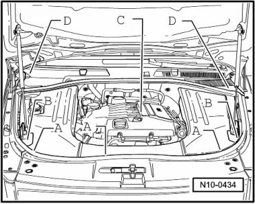
- Install adapter (V.A.G 1318/20-1) on to adapter (V.A.G 1318/20).

- Turn valve (on T-piece) counterclockwise until completely open.
CAUTION!
Fuel supply lines are under pressure! Before opening fuel system, connect diesel extractor (VAS 5226) and release pressure.
- Remove breather valve.
- Connect adapter (V.A.G 1318/20) with adapter (V.A.G 1318/20-1) and diesel extractor (VAS 5226) to bleed valve - 1 -.

- Turn valve (on T-piece) clockwise into bleed valve to stop.
- When the fuel pressure has been released, the fuel system may be opened.
- In addition, wrap a cloth around the connection to catch fuel which runs out.
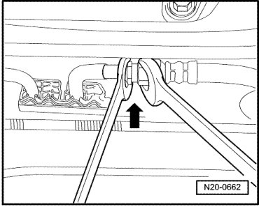
- Disconnect fuel supply line - arrow -.
- All cable ties which are opened or cut open when removing engine, must be replaced in the same position when installing engine.
- Disconnect breather line - arrow - to evaporative emission (EVAP) canister purge regulator valve (N80) in engine compartment.

- Disconnect small connector - A - off engine control module and disconnect ground connection - arrow - of wiring harness.
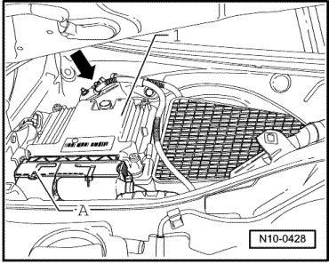
- Open fuse box cover on left in plenum chamber and separate connectors - A -, - B - and - C -.
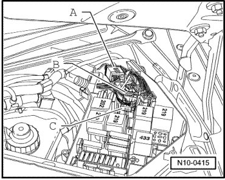
- Remove wiring harness from plenum chamber and place it on engine.
- Disconnect starter wire - A - and generator wire - B - and place them on engine.
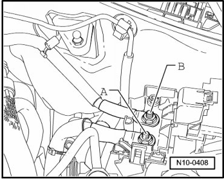
- Pull vacuum hoses - 1 - from intake manifold.

With Code BAA
- Pull vacuum hose - 4 - from intake manifold.
Continuation For All
- Pull pressure hose off secondary air injection pump - arrow -.

- Separate connectors - 1 through 4 - for oxygen sensors and place connectors on engine.

• Cylinders 1 through 3 = black
• Cylinders 4 through 6 = brown
- Separate the connecting line to the air suspension compressor at the air filter - arrow - as follows:

- Carefully pry off the green circlip - 1 - using a screwdriver. Then press the clamping ring - 2 - in direction of - arrow -.
- Pull only the slackened line - B - from the connection - A - at the air filter.

- Remove top part of air filter upward and out --> [ Air Filter, Assembly Overview ] Service and Repair.
- Unclip transmission breather line from air filter housing.
- Evacuate refrigerant from air conditioning system: --> Heating, Ventilation and Air Conditioning 87 General Information
- Remove noise insulation tray.
CAUTION!
Hot steam may escape when opening expansion tank. Wear protective goggles and protective clothing to prevent damage to eyes and scalding. Cover cap with a rag and open carefully.
- Drain coolant --> [ Cooling System, Draining and Filling ] Procedures.
- Pull upper coolant hose off radiator, and lower coolant hose off coolant pipe.
• Observe disposal regulations!
- Disconnect lines - arrow - from transmission oil cooler at lower right. Catch fluid which runs out.
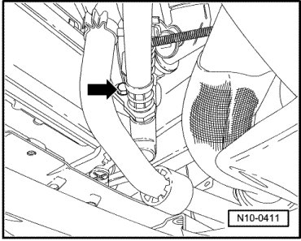
- Disconnect line from power steering fluid cooler below on left. Catch fluid which runs out.
- Loosen double clamp between catalytic converter and center muffler and push clamp forward.
- Support rear muffler using engine/transmission jack (V.A.G 1383 A), remove rear mountings and lower exhaust system.
- Remove heat shield on steering mechanism and loosen universal joint: --> Suspension, Wheels, Steering 48 Description and Operation
- Separate connectors - A - on transmission as well as transfer case - B - and loosen selector lever cable.
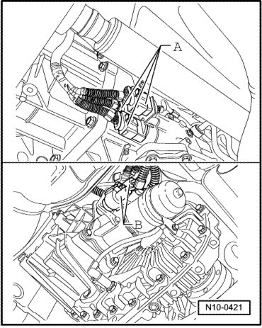
- Remove driveshaft. Drive/Propeller Shaft
- Remove front wheels.
- Remove front wheel housing liners. Front Fender Liner
• Observe disposal regulations!
- Disconnect brake lines in wheel housing at brake hose and catch fluid which runs out. --> Front Brake Assembly Overview
- In wheel housings, separate all connectors between body and front axle.
- Unbolt connection lines for air suspension at strut.
- Remove transmission transverse support - A -.
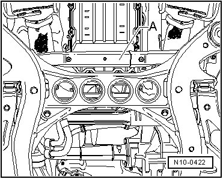
- Secure suspension struts using tensioner hooks (VW 552) as shown.
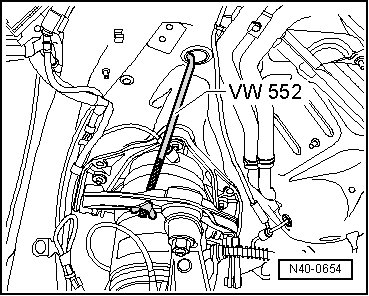
- Remove the upper bolts from suspension strut on each side of vehicle. --> Front Suspension
Preparing Scissor Lift Table (VAS 6131) for the Continued Work Procedure:
- Attach pulley-end engine supports (VAS 6131/6-1) left and (VAS 6131/6-2) right - arrows show direction of travel - on scissor lift table (VAS 6131) and secure bolts at following positions:

• Left support - 1 -: A5, B4 and B5
• Right support - 2 -: G4, H4 and H5
- Bolt both axle supports (VAS 6131/6-3) and (VAS 6131/6-4) - 3 - to scissor lift table at following positions:
• Left axle support - 3 -: A6 and C6
• Right axle support - 3 -: F6 and H6
- Rotate turntables of axle supports downward.
- Place axle supports (VAS 6131/6-5) - 4 - for subframe and - 5 - (VAS 6131/6-6) for transmission mount in appropriate positions on scissor lift table.
- Position horizontally adjusted scissor lift table under engine/transmission assembly. The supports - 1 - must be guided into the corresponding mount - arrow - at right and left.
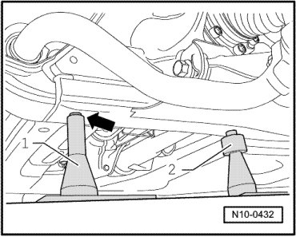
- Simultaneously, guide right and left supports for transmission mounts into corresponding holes - arrow -.
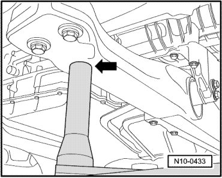
When all four supports are in the appropriate receptacle holes without pressure:
- Using light pressure beneath control arm, screw both turntables of axle supports until the securing device can be removed using the tensioner hooks (VW 552).
- Guide supports - 2 - into their respective receptacles in subframe, correcting support height as necessary with knurled nuts.
- Loosen subframe bolts - 1 -, - 2 - and - 3 -, as well as transmission transverse support - 4 -.
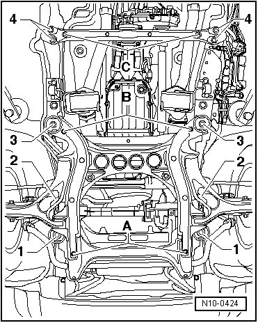
• After loosening the subframe, it will be necessary to perform a wheel alignment on the vehicle.
- Slowly lower engine/transmission assembly, constantly observing clearance.
- Secure engine to assembly stand --> [ Securing Engine to Assembly Stand ] Securing Engine to Assembly Stand.